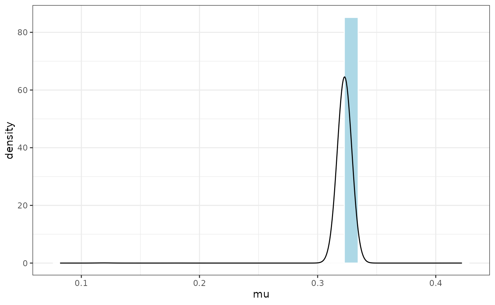
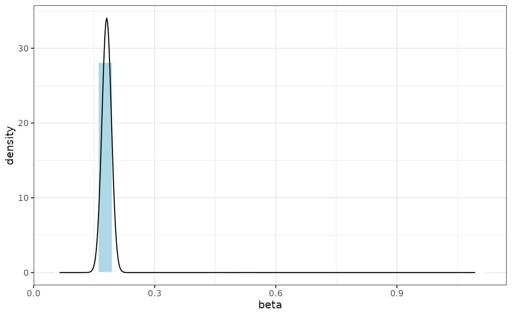
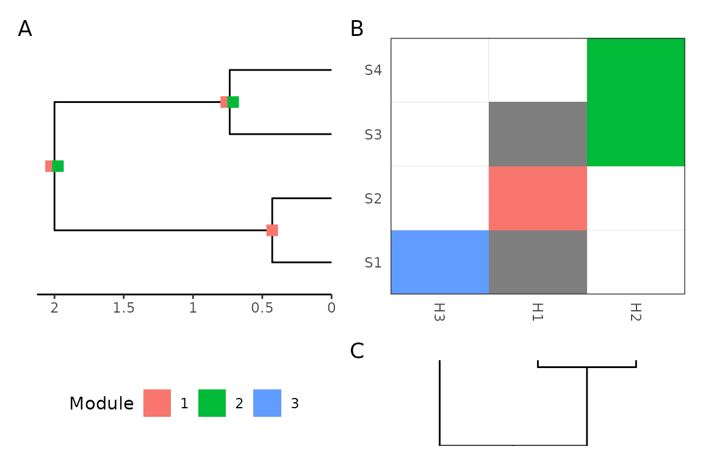

library(treepplr)
library(ggplot2)
library(magrittr)
library(dplyr)
library(ape)
if(!require("evolnets", quietly = TRUE)) {
library(devtools)
if (!require("BiocManager", quietly = TRUE))
install.packages("BiocManager")
library(BiocManager)
BiocManager::install("ggtree")
devtools::install_github("maribraga/evolnets")
library(ggtree)
library(evolnets)
} else {
library(evolnets)
}This is a very simplified workflow in treepplr for analysis of host repertoire evolution. The data used here is simulated and the inference is too simple. A real analysis would include many other steps such as testing of different inference methods and check of convergence.
The purpose of this vignette is to show how to run TreePPL with treepplr, and how to process the output with evolnets.
Load model and data files
Load the 3-state host repertoire model and example data available within treepplr.
Run treeppl
Now we can compile and run the TreePPL program using the default inference options.
output_list <- tp_treeppl(model = model, model_file_name = "hostrep",
data = data, data_file_name = "hostrep")
output <- tp_parse_host_rep(output_list)The output from tp_parse_host_rep() contains all information outputted by treeppl, so we need to separate the sampled character histories from the sampled parameter values.
Parameter estimates
logs <- output[[1]] %>%
dplyr::select(iteration, log_weight, mu, beta) %>%
unique() %>%
dplyr::mutate(weight = exp(log_weight - max(.$log_weight)))
ggplot(logs, aes(mu, weight=weight)) +
geom_histogram(aes(y = after_stat(density)), col = "white", fill = "lightblue", binwidth=0.04) +
geom_density() +
theme_bw()
ggplot(logs, aes(mu, weight=weight)) +
geom_histogram(aes(y = after_stat(density) ), col = "white", fill = "lightblue", binwidth=0.04) +
geom_density() +
theme_bw()
Character history
Extract table with character history samples
# post-treatment function
get_history <- function(parsed_output){
table <- parsed_output[[1]] %>%
dplyr::select(-c(log_weight, mu, beta, lambda1, lambda2, lambda3, lambda4)) %>%
dplyr::mutate(transition_type = "anagenetic") %>%
dplyr::mutate(node_index = dplyr::case_when( # fix to mismatch and 0- to 1-base
node_index == 3 ~ 5,
node_index == 4 ~ 4,
TRUE ~ node_index + 1)) %>%
dplyr::filter(!is.na(log_norm_const))
return(table)
}
tp_hist <- get_history(output)This table can be used by evolnets for plotting results, together with the phylogenetic trees and the known extant interactions.
# get data from treepplr
symbiont_tree <- read_tree_from_revbayes(
system.file("extdata/hostrep3states_treeRev.tre", package = "treepplr"))
host_tree <- read.tree(
system.file("extdata/hostrep3states_host_tree.tre", package = "treepplr"))
matrix <- read.csv(
system.file("extdata/hostrep3states_extant_interactions.csv", package = "treepplr"),
row.names = 1) %>%
as.matrix()Plot data and inferred ancestral fundamental host repertoires
# calculate posterior at nodes
tp_at_nodes <- posterior_at_nodes(tp_hist, symbiont_tree, host_tree, state = c(1,2))
#plot
(tp_asr_fund <- plot_matrix_phylo(matrix, tp_at_nodes, symbiont_tree,
host_tree, type = "repertoires",
repertoire = "fundamental"))Plot data and inferred ancestral realized host repertoires
(tp_asr_real <- plot_matrix_phylo(matrix, tp_at_nodes, symbiont_tree,
host_tree, type = "repertoires",
repertoire = "realized"))